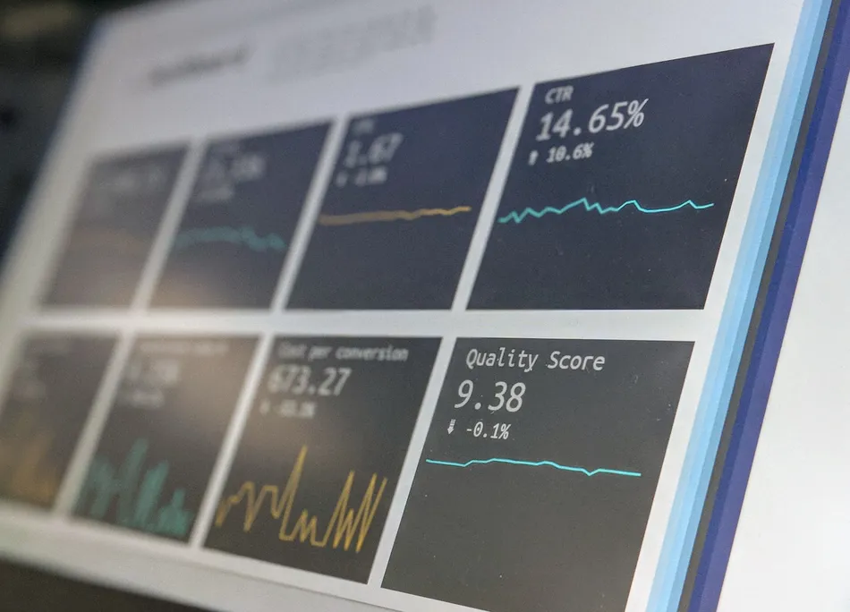

Image: Unsplash
Custom Web Development: Tailor Your Business Website
Custom web development has revolutionized the digital landscape, empowering businesses to have unique online identities. Imagine a website made specifically for you that will have your brand’s personalized touch, speak to your target audience and differentiate you in your market. That’s the benefits of custom - it’s like getting an outfit tailored just for your body.
Crafting a good website demands the expertise of seasoned developers and designers. Let's delve into some of the key aspects we'll be exploring:
- The strategic approach of custom design and its importance in establishing a robust web presence for your business.
- What effect custom web development has on search engines. SEO is the big buzzword and if your website doesn't have this optimized, you can lose out on potential leads.
- The difference between front-end and back-end development techniques and how they play into a typical webpage. A good web development team will seamlessly incorporate both practices into a website.
- The different content management systems (CMS) and what pros and cons ready-made templates have when compared to a custom coded website.
- The scalability of a customized website vs pre-made templates and which better benefits your potential customers.
From the design elements to SEO to the different programming languages, there's a lot to unpack when discussing the details of custom web solutions. Regardless of whether you're a big enterprise or a small business, a well-done customized website can bring significant benefits. Let's jump in.
Planning and More Planning: The Strategic Approach to Web Development
Websites, like many things in business, require an intentional and thoughtful strategy. Instead of settling for a basic template from popular website builders, prioritizing a thought-out custom design is essential in building your website. You're unique and shouldn't look like everyone else.
Tailored to perfection: the benefits of going custom
- Site speed - Site builders, such as WordPress, get a bad rep for having slow loading times while custom developers only deploy code that is necessary, significantly reducing load time. We have about an 8-second attention span, make sure you get your business' point across quickly.
- Brand awareness - By embracing thoughtful and custom web design, web development teams can construct websites that truly reflect a business's unique personality. They're also able to implement a business' desired specifications, from colors, fonts, motion and more.
- User friendly - Ready-made templates serve the majority; custom development serve you. That also applies to your users. Unlike pre-made templates, a tailored website offers specific functionality that can make a significant difference in connecting with your audience and setting you apart from your competitors.
Strong web presence matters
In today’s competitive landscape, having a strong web presence is essential. Think of your website as your (digital) home - you want your prospects to have the best impression when entering. A professionally designed website can do just that. From educating your audience on your offerings to sharing ideas with your blog content, your website is supposed to do everything, effortlessly. The worst response is for people to think, "Oh, I've seen this a million times."
With your website, be a trendsetter, not a follower. Next we'll look at the importance of SEO and how effective it can be when paired with custom web solutions.
Custom Web Development and SEO
We've already discussed how custom web development solutions benefit your business and its digital presence. But what about the effect it has on SEO? We'll dive into it in this section but get ready for some technical jargon. Don’t worry, we don’t go too deep in explaining SEO, but if you want to learn more, feel free to read about it here.
A plugin for this and a plugin for that: a custom developer's nightmare
Does your current site have endless plugins that need to be updated? And are all of your current plugins actively serving you or just slowing down your site?
Any seasoned developer appreciates the flexibility provided by custom website builds. Unlike pre-made templates, custom sites are built with easy access to the code-base, which will play a huge role in search engine optimization. For reference, here are important SEO terms and how a customized approach will benefit your ranking:
-
On-Page SEO: Refers to the structure and content of your webpage. Good on-page SEO consists of having the appropriate headings, text, image alt tags and an internal linking system. Think of each page of your site as little strings of data that are connected via links. A customized website will give developers full control over the design and structure of the page.
-
Technical optimization: We briefly touched upon the speed benefits that custom solutions have for a website but how does that translate to SEO? Search engines tend to award the faster loading site when comparing you to your competitors. Other benefits include clean code-base, proper URL structure and mobile responsiveness. These are all vital things that a simple template is unable to do.
-
Schema markup and structured data: This is the information that helps search engines understand the context and meaning of your webpage. With custom websites, adding these to your webpages will be simple for any web development company. Typical structured data will look like this:
<script type="application/ld+json"> { "@context": "https://schema.org/", "@type": "Recipe", "name": "Party Coffee Cake", "author": { "@type": "Person", "name": "Mary Stone" }, "datePublished": "2023-07-22", "description": "This coffee cake is awesome and perfect for parties.", "prepTime": "PT20M" } </script>
The key takeaway is that using pre-built themes can restrict certain functionalities and make it harder to boost your SEO. While there are plugins like Yoast for WordPress that let you add structured data and meta tags to your webpages, they won't magically improve your site speed or layout - you'll need a different plugin for that. But here's the catch, should you add a bunch of random plugins to your site? The answer is no. Your developers and potential customers will thank you.
Impact on traffic and conversion rates
To increase online visibility, pairing SEO best practices with a customized website will lead to more traffic and conversion rates. When your site ranks high on SERPs (Search Engine Results Pages), it naturally attracts more visitors who are likely interested in what you offer.
This increase in targeted traffic often translates into higher conversions since these users are already searching for your product or service. Just make sure your website is optimized for conversions because you don't want to leave your users empty-handed.
With custom web development, businesses can optimize their website's structure, content, loading speed, and user experience, attracting targeted traffic and boosting conversion rates. Stay ahead of your competitors by securing a higher ranking.
Front-End and Back-End Coding
When you envision a website, what comes to mind? Typically, it's the text, images, or buttons on a webpage. This is referred to as the front-end - think of it as front facing/client facing part. But what about when you interact with it? For example, when you "like" something or submit a form, where does the information get processed? Yep, in the back-end! These two sides need to work seamlessly for a site to be successful. With website builders, there's no ensuring that these sides will exchange data the way you want. Take a look at some commonly used programming languages:
- JavaScript
- Python
- Ruby
- PHP
- Swift
- Go
- TypeScript
- HTML/CSS (not technically programming languages, but fundamental for web development)
- Shell scripting languages (e.g., Bash, PowerShell)
- SQL (Structured Query Language) for database management.
The front-end: design and the user
Front-end development refers to the process of creating user-facing components of a website, like sections, sidebars, buttons and form fields. It involves custom web design, implementation, and optimization of the visual and interactive elements. From intentional layouts to user-friendly menus, front-end developers use HTML5, CSS3, and JavaScript to create visually stunning websites with user experience in mind. Essentially, it's what you typically see and interact with while on a webpage. Want to learn more? Check out W3Schools' guide on HTML5.
The back-end: behind the scenes
Back-end developers build the server-side components of a website or web app - the things we don't see. They work with languages like PHP or Python and databases like MongoDB or MySQL. This also includes the implementation of the logic, database interactions, and server operations that power the functionality and data management of a website or app. Another example is API (application programming interface) development, which allows websites to interact with external services; an example is connecting it to a CRM (Customer Relationship Manager), like HubSpot, Salesforce or Mailchimp. If you want a comprehensive guide, head over to the Mozilla Developer Network.
Content Management Systems (CMS)
With all this talk about developers, programming and code, how will non-technical people be able to manage their own websites? Luckily the development of CMS systems has introduced a customized approach that streamlines website editing. Thanks to modern frameworks and reliable platforms like WordPress, crafting the easily editable website is now achievable for everyone.
WordPress and custom themes
With about 43% of websites being built on WordPress, we can assume that many people are familiar with its user-friendly dashboard. Web developers that are building custom themes are able to leverage the familiar dashboard while only using what's necessary. This is a good solution for business owners but be mindful of the amount of plugins - think "less is more."
Headless CMS
Headless CMS is a content management approach that separates the content creation and management capabilities from the presentation layer of a website or application. So in your traditional CMS, the content management is integrated with the front-end of the website like WordPress' Gutenberg blocks. However the content management system is decoupled ("headless") from the front-end, allowing more freedom in the content delivery.
Now with all of these modern frameworks around, web developers are incorporating headless CMS more than ever. Some examples are Sanity.io, Strapi, Contentful and Hygraph. Good things happen when you personalize your website and its content management system: you unlock an efficient and easy-to-use workflow.
Scalability & Security
Now that we've covered the benefits of custom web development solutions when it comes to SEO and content management, let's also discuss maintaining and scaling the website. By having full control of what code is deployed to your website, you create your own architecture and limit what can be accessed.
Grow with your business
As your business grows, so should your website - and it should be easy to do so. Custom web development teams build websites with future scalability in mind, considering how components will be added over time. Consider these when sizing-up:
- Architecture - Custom developers pay attention to creating a scalable architecture that can accommodate growing traffic and increasing user demands. They'll also optimize the infrastructure to handle heavier loads efficiently.
- Flexible code-base - As you need new features, blog content or sections, a custom built website is written in organized code making easier to add functionalities without disrupting the entire website.
- Integration - Developers can leverage cloud services, content delivery networks (CDNs), and distributed computing architectures to handle additional requests that a business may need. Whether it's integrating CRMs or connecting your website to an API, these scalable solutions can easily accommodate your needs.
Overall, custom web development allows businesses to think about scalability from the beginning.
Staying safe: web security
Your website is out there in the world and anyone can access it - make sure you have security parameters in place. When investing in a custom website, you're also taking steps to mitigate any risks with cybercrime. According to a Cybersecurity Ventures report, cybercrime is on the rise, costing trillions worldwide. Don't be a victim and save yourself from potential reputational damage and long-term costs. Your web development team will:
- Implement secure coding practices - Custom developers will follow secure coding practices from the ground up. They’ll implement security guidelines, such as input validation and proper authentication. They'll also set up protection against common vulnerabilities like SQL injection and cross-site scripting, ensuring that your data remains safe.
- Take appropriate security measures - You might come across the term "Secure Sockets Layer (SSL)," an encryption based internet security protocol. Web developers implement secure communication protocols (HTTPS) and access control parameters to protect sensitive data.
- Follow compliance standards - Custom web development teams follow requirements assigned by the GDPR (General Data Protection Regulation), PCI DDS (Payment Card Industry Data Security Standard), and HIPAA (Health Insurance Portability and Accountability Act).
Ready-for-you templates will not have these security measures in place. When working with a development company, be sure they're addressing these points.
Final Thoughts
Custom web development offers tremendous benefits for your business. Today, we uncovered how taking a strategic approach to website building and incorporating your brand's personal touch can differentiate you in your market. We also did a mini-dive on the benefits it has on SEO by optimizing the on-page requirements and load speed - remember to rank before your competitors! Finally, we looked at the future state of your business and how customizing the CMS and optimizing the code will help your website's scalability.
You want a website that has been planned and built just for you. Look away from the "faster" pre-built template method and stand out with a tailored solution for your business.
Share On: